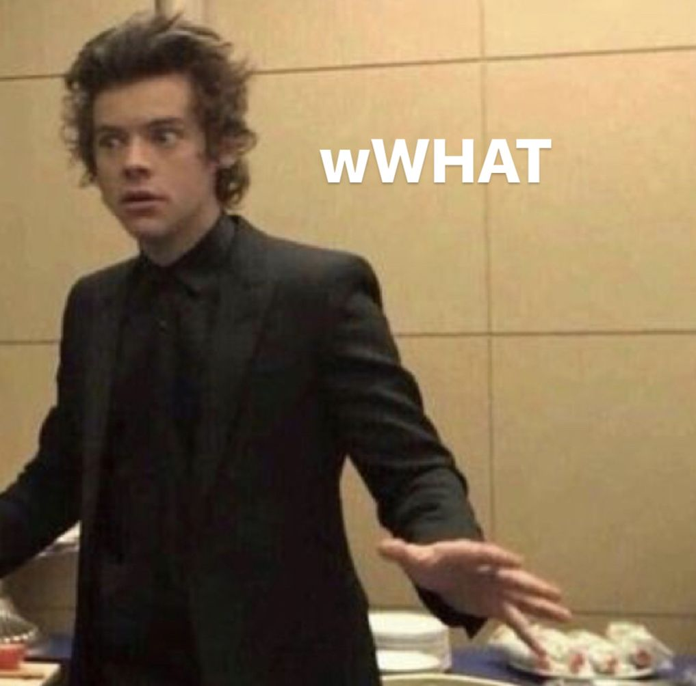
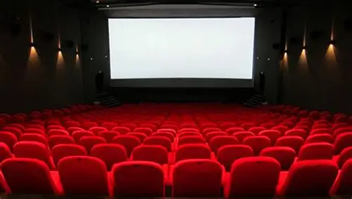
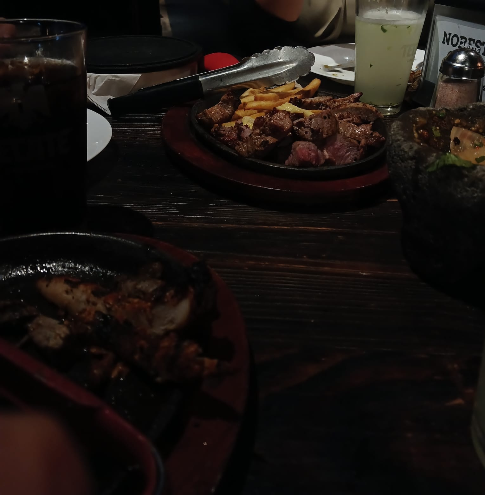

Rauw Alejandro
Es uno de mis cantantes favoritos porque disfruto mucho su música y me gusta escucharla en mi tiempo libre.
En este ejemplo acomode a dos de mis cantantes favoritos en una fila. Aquí use flex-direction: row para que los elementos se vean uno al lado del otro.
Es uno de mis cantantes favoritos porque disfruto mucho su música y me gusta escucharla en mi tiempo libre.

También me gusta mucho porque su música me da una vibra diferente y eso hace que me entusiasme más.
.ejemplo-direction{
display: flex;
flex-direction: row;
}Aquí use series y películas que me gustan. En este caso puse flex-wrap: wrap para que si los elementos ya no caben en una sola línea, se acomoden hacia abajo.
Es mi serie favorita porque conecte más con ella y me envolvió mucho su trama.
Me gusta mucho porque la empece a ver en pandemia junto a mi papá y me intrigo desde el inicio.
Es una de mis películas favoritas y siempre se me hace entretenida de ver.

También es una película que me gusta mucho y por eso la agregue en esta parte.
.ejemplo-wrap{
display: flex;
flex-wrap: wrap;
}En este ejemplo use dos de mis videojuegos favoritos. Aquí aplique justify-content: space-evenly para que el espacio se repartiera de forma más pareja entre los elementos.
Este es mi videojuego favorito porque desde chiquita lo jugaba con mis hermanos y me trae buenos recuerdos.
Me gusta porque me entretiene mucho y también convivo con amigos mientras jugamos.
.ejemplo-justify{
display: flex;
justify-content: space-evenly;
}En esta parte use lugares a los que disfruto ir. Aquí use align-items: center para que los elementos se alinearan al centro dentro del contenedor.

Este lugar es mi preferido porque siento que me desconecto mucho de mi alrededor.

Este lugar me gusta mucho por la convivencia que se forma con las otras personas, normalmente voy con familiares y me gusta pasar un buen rato en familia con tranquilidad.
.ejemplo-align{
display: flex;
align-items: center;
}